Pee debug — scale + position
Scale
1.0
Translate X
0
Translate Y
0
Duration (ms)
12000
Apply instantly
Animate to current
Reset
Tip: positive Y moves DOWN. This is anchored bottom-right (transform-origin 100% 100%).
Use “Animate to current” to preview constant-speed growth.